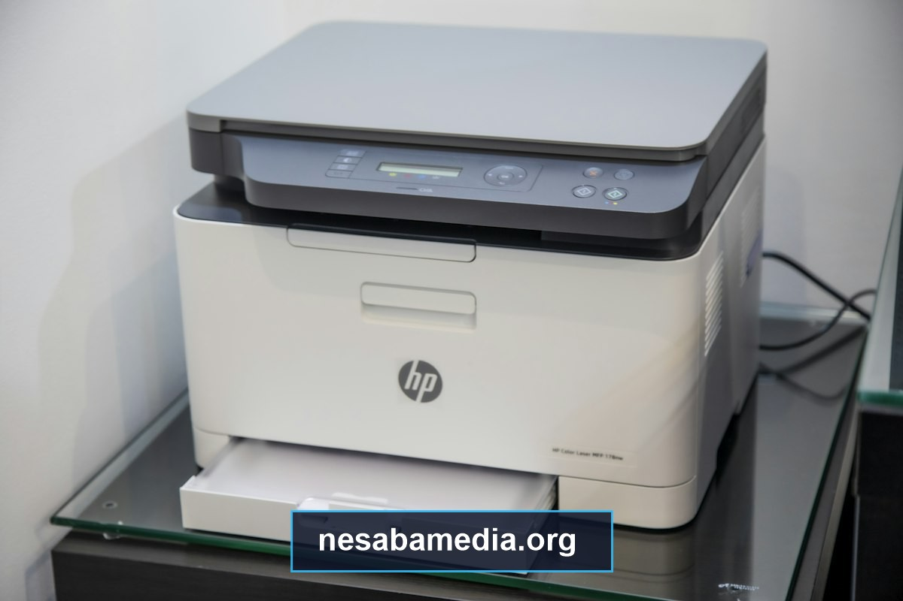

Printer serbaguna All-in-One (Print, Scan, Copy) Epson EcoTank L3110 telah mengukuhkan statusnya sebagai salah satu perangkat percetakan paling legendaris, tahan banting, dan paling banyak dioperasikan di seluruh pelosok Indonesia. Mulai dari kantor instansi pelayanan publik, unit usaha percetakan digital, studio foto kreatif, ruang staf sekolah dan kampus, hingga meja belajar rumahan, seri printer ini menjadi andalan utama berkat sistem tangki tinta terintegrasi yang terkenal amat hemat dalam biaya operasional cetak per lembar.
Meskipun demikian, performa mekanikal hardware yang prima tidak akan pernah dapat mengeluarkan kemampuan terbaiknya tanpa adanya jembatan komunikasi perangkat lunak yang sempurna antara komputer dan unit mesin. Pemasangan driver resmi yang presisi bukan sekadar persoalan agar dokumen dapat keluar dari baki kertas, melainkan menyangkut kalibrasi perataan warna, akurasi DPI saat memindai berkas digital melalui scanner kaca, aktivasi utilitas pemeliharaan head pembersih tinta, serta pencegahan galat komunikasi sistem operasi seperti error status offline atau spooler hang yang kerap mengganggu tenggat waktu pekerjaan penting.
- 1. Mengapa Epson EcoTank L3110 Menjadi Printer All-in-One Paling Populer di Indonesia?
- 2. Apa Perbedaan Mendasar Antara Driver Bawaan Windows dan Driver Resmi Epson?
- 3. Bagaimana Prosedur Menyiapkan Komputer Sebelum Memulai Instalasi Driver?
- 4. Bagaimana Langkah demi Langkah Menginstal Driver Printer dan Scanner Epson L3110?
- 5. Apa Saja Masalah Umum Printer Epson L3110 dan Bagaimana Solusi Teknis Mengatasinya?
- 6. Bagaimana Merawat Printer Epson L3110 Agar Memiliki Masa Pakai Printhead yang Awet?
- 7. Bagaimana Konfigurasi Sharing Printer Epson L3110 Melalui Jaringan LAN Lokal?
- 8. Tanya Jawab Eksklusif (FAQ) Seputar Driver dan Pemeliharaan Epson L3110?
Mengapa Epson EcoTank L3110 Menjadi Printer All-in-One Paling Populer di Indonesia?
Evolusi dari model tangki eksternal konvensional (seperti seri legendaris L120 atau L360) menuju desain sasis EcoTank terpadu pada Epson L3110 membawa transformasi masif dalam industri percetakan. Penempatan tabung tinta di bagian depan unit (front-facing tank) dengan jendela transparan memungkinkan pengguna memantau ketinggian cairan tinta secara visual dari kejauhan tanpa harus membuka kap penutup printer.
Apa Saja Fitur Unggulan dan Spesifikasi Mekanikal Epson L3110?
Secara teknis, Epson L3110 dipersenjatai dengan resolusi cetak maksimum yang sangat tajam mencapai 5760 x 1440 optimized DPI. Hal ini memungkinkan pencetakan foto bebas tepi (borderless printing) pada media kertas foto 4R dengan gradasi warna yang halus dan transisi bayangan yang natural. Kecepatan cetak draf mencapai 33 halaman per menit (ppm) untuk dokumen teks monokrom dan 15 ppm untuk dokumen berwarna, menjadikannya salah satu printer ink tank kelas desktop tercepat di kategorinya.
Dari sisi pemindaian, unit flatbed scanner optik CIS (Contact Image Sensor) yang disematkan mampu menangkap detail dokumen fisik hingga resolusi optik 600 x 1200 DPI dengan kedalaman warna 48-bit internal. Pengguna dapat menduplikasi KTP, kartu keluarga, akta notaris, hingga draf gambar teknis arsitektur dengan ketajaman garis yang mendekati dokumen aslinya.
Bagaimana Teknologi Bebas Panas (Heat-Free Technology) Menghemat Energi Listrik?
Keunggulan pembeda paling mendasar antara printer Epson dengan para pesaingnya terletak pada teknologi cetak Micro Piezo. Berbeda dengan printer inkjet berbasis termal yang memanaskan cairan tinta hingga mendidih untuk menciptakan gelembung letupan, printhead Micro Piezo milik Epson menggunakan elemen kristal piezoelektrik yang bergetar secara mekanik ketika dialiri sinyal impuls listrik bertegangan rendah.
Ketiadaan proses pemanasan ini menghasilkan konsumsi daya operasional yang luar biasa rendah, yakni hanya berkisar 12 Watt ketika proses cetak aktif berlangsung dan kurang dari 0.4 Watt pada saat mode tidur (Sleep Mode). Karakteristik hemat energi ini membuat Epson L3110 sangat stabil saat dioperasikan di rumah dengan kapasitas daya listrik 450 VA atau 900 VA tanpa risiko sekring trip anjlok.

Mengapa Desain Tangki Tinta Terintegrasi Mencegah Tumpahan dan Kesalahan Pengisian?
Salah satu momok terbesar pada printer infus modifikasi zaman dahulu adalah risiko tumpahnya tinta cair ke meja kerja atau salah menuangkan botol warna (misalnya warna biru tertuang ke tangki kuning). Epson memecahkan persoalan ini dengan merancang mekanisme botol tinta berulir dengan nosel khusus berkode fisik unik (unique key nozzle) untuk setiap botol seri 003. Botol warna Cyan hanya dapat mengalir ke tangki Cyan, botol Magenta hanya mengunci pada slot Magenta, dan seterusnya. Selain itu, aliran cairan akan berhenti secara otomatis begitu volume tangki mencapai garis batas penuh.
Apa Perbedaan Mendasar Antara Driver Bawaan Windows dan Driver Resmi Epson?
Banyak pengguna bertanya-tanya mengapa mereka perlu repot-repot mengunduh paket driver lengkap jika Windows 10 atau Windows 11 sudah mampu mendeteksi printer saat kabel USB dicolokkan pertama kali. Memahami perbedaan antara generic driver dengan driver OEM bersertifikasi akan membuka potensi penuh perangkat Anda.
| Parameter Komparasi | Driver Standar Generic Windows | Driver Resmi Penuh Epson L3110 |
|---|---|---|
| Akurasi Profil Warna | Standar sRGB umum, sering kali pudar | Epson Vivid, Adobe RGB, kalibrasi foto akurat |
| Pengaturan Kualitas Cetak | Hanya Draft dan Normal standar | Draft, Standard, High, Photo RPM Max Resolution |
| Akses Pemindai Scanner | Windows Fax and Scan terbatas | Epson Scan 2 penuh (Auto de-skew, OCR, PDF) |
| Utilitas Pemeliharaan Head | Tidak tersedia / sangat minim | Nozzle Check, Head Cleaning, Power Ink Flushing |
| Pemantauan Status Tinta | Perkiraan kasar / kadang tanda tanya | Epson Status Monitor 3 real-time interaktif |
Mengapa Driver Standar Generic Windows Membatasi Pilihan Resolusi Cetak dan Scanner?
Driver bawaan sistem operasi yang terpasang melalui modul Plug-and-Play (WSD atau Microsoft generic USB printing) dirancang semata-mata untuk fungsionalitas dasar darurat. Driver generik ini tidak menyertakan modul algoritma halftoning eksklusif milik Epson yang bertugas mengontrol ukuran tetesan mikroskopis tinta (droplet size hingga 3 picoliter). Akibatnya, cetakan foto akan terlihat berbintik kasar (grainy) dan kecepatan pemrosesan spooler cetak dokumen multi-halaman menjadi lambat.
Apa Saja Utilitas Eksklusif yang Didapatkan dari Paket Driver Resmi Penuh?
Ketika Anda menginstal paket installer lengkap dari Epson, sistem operasi Anda akan dibekali dengan modul Epson Status Monitor 3. Utilitas cerdas ini bertindak sebagai jembatan telemetri yang terus-menerus memantau kondisi fisik printer: mendeteksi letak tepat terjadinya kertas macet (paper jam), menghitung siklus penyerapan bantalan tinta pembuangan, serta memberikan panduan visual langkah demi langkah di layar monitor ketika terjadi malafungsi mekanis.
Bagaimana Cara Menentukan Kompatibilitas Versi Sistem Operasi Windows 32-bit atau 64-bit?
Pemasangan file driver yang keliru antara arsitektur bit akan memicu kegagalan instalasi dengan kode galat "The driver is not compatible with your version of Windows". Untuk memeriksa arsitektur sistem operasi komputer Anda, tekan tombol shortcut Windows + Pause/Break atau buka menu Settings > System > About. Perhatikan bagian System type: pastikan Anda mengunduh paket driver bertanda x64 untuk arsitektur 64-bit atau x86 untuk arsitektur 32-bit.
Bagaimana Prosedur Menyiapkan Komputer Sebelum Memulai Instalasi Driver?
Kunci dari instalasi peripheral USB yang mulus dan bebas konflik driver adalah disiplin dalam urutan tahapan penyambungan kabel fisik. Kesalahan yang paling kerap dilakukan oleh pemula adalah menyambungkan kabel USB printer ke laptop sebelum program installer dijalankan.
Mengapa Kabel USB Tidak Boleh Dicolokkan Terlalu Awal Saat Proses Setup?
Ketika kabel USB dihubungkan ke komputer sebelum installer resmi dibuka, modul Windows Plug and Play akan langsung mengambil alih identifikasi perangkat keras dan secara otomatis mengasosiasikannya dengan driver generik bawaan Windows Update. Begitu asosiasi salah ini terbentuk, installer resmi Epson sering kali gagal mengenali koneksi port USB karena komunikasi port telah terkunci oleh layanan spooler Windows.
Oleh karena itu, aturan emas instalasi printer desktop adalah: Biarkan kabel data USB tetap terlepas dari komputer sampai jendela wizard instalasi resmi secara eksplisit menampilkan animasi meminta Anda untuk menghubungkan kabel kabel USB dan menyalakan tombol power printer.
Bagaimana Cara Memeriksa Integritas Port USB Melalui Windows Device Manager?
Sebelum memulai, pastikan port USB pada motherboard komputer atau laptop Anda berada dalam kondisi sehat. Buka menu Device Manager dengan menekan tombol Windows + X lalu pilih Device Manager. Periksa bagian Universal Serial Bus controllers: pastikan tidak ada tanda seru berwarna kuning pada komponen USB Root Hub atau Host Controller. Hindari penggunaan dongle USB hub perpanjangan pasif tanpa daya eksternal karena voltase yang tidak stabil dapat mengacaukan aliran transmisi data cetak beresolusi tinggi.
Mengapa Pengaturan Antivirus Perlu Disesuaikan Sementara Waktu Saat Pemasangan Berkas INF?
Beberapa perangkat lunak antivirus pihak ketiga memiliki modul perlindungan proteksi sistem (system file integrity guard) yang sangat agresif. Ketika installer Epson mengekstrak berkas pustaka .INF dan menulis sertifikat driver ke dalam katalog sistem C:\Windows\System32\DriverStore\FileRepository, antivirus terkadang mengkarantina berkas epsonprint.dll karena dianggap sebagai aktivitas injeksi pustaka tidak dikenal. Menonaktifkan sementara perlindungan real-time selama 5 menit saat proses instalasi berjalan akan menjamin penulisan sertifikat registri berlangsung sempurna.
Bagaimana Langkah demi Langkah Menginstal Driver Printer dan Scanner Epson L3110?
Untuk memastikan seluruh fungsi perangkat berfungsi 100%, proses instalasi harus mencakup dua komponen utama: Driver Printer untuk manajemen dokumen dan Driver Scanner (Epson Scan 2) untuk manajemen modul pemindai kaca.
Bagaimana Cara Menjalankan File Setup Wizard Berformat Executable Resmi?
Ikuti panduan terstruktur berikut untuk memasang paket driver printer:
- Klik kanan pada file installer driver printer Epson L3110 (misalnya
L3110_x64_26001USHome_s.exe), lalu pilih opsi Run as administrator. - Pada jendela dialog pemilihan model, pilih EPSON L3110 Series dan centang opsi Set as default printer jika printer ini akan menjadi perangkat utama Anda, lalu klik OK.
- Pilih bahasa pengantar antarmuka (tersedia Bahasa Indonesia atau English) dan setujui perjanjian lisensi pengguna akhir (EULA) dengan mengklik Agree.
- Pilih opsi koneksi: pilih USB Connection (karena seri L3110 murni menggunakan kabel data USB tanpa modul Wi-Fi).
- Ketika layar menampilkan instruksi "Connect the printer and turn on the power", tancapkan kabel USB ke port komputer dan tekan tombol power printer. Sistem akan mendeteksi sinyal hardware dalam waktu sekitar 10 hingga 20 detik dan menampilkan notifikasi "Printer driver installation and port configuration were completed successfully".
Bagaimana Proses Konfigurasi Port Virtual USB Printing Support Berjalan?
Di balik layar, Windows akan membuatkan sebuah port virtual bernama USB001 (Virtual printer port for USB). Port ini mengalokasikan jalur komunikasi serial berkecepatan tinggi yang secara eksklusif didedikasikan untuk mengirimkan antrean perintah raster grafis dari print spooler Windows menuju buffer memori fisik Epson L3110.
Bagaimana Mengaktifkan Fitur Epson Scan 2 untuk Pemindaian Dokumen Beresolusi Tinggi?
Setelah driver printer terpasang, instalasi driver scanner wajib dilakukan secara terpisah menggunakan file installer EpsonScan2_L3110_Setup.exe:
- Jalankan file installer scanner dengan hak akses administrator.
- Ikuti wizard hingga proses ekstraksi pustaka pemindai selesai sempurna.
- Buka menu Start Windows dan luncurkan aplikasi Epson Scan 2.
- Pada panel kontrol Epson Scan 2, Anda dapat memilih mode operasional: Document Mode untuk pemindaian berkas arsip PDF dengan fitur perataan miring otomatis (Auto de-skew), atau Photo Mode untuk pemindaian gambar beresolusi tinggi hingga 1200 DPI berformat TIFF atau JPEG tanpa kompresi.
Di Mana Menemukan Informasi dan Panduan Teknis Lengkap Terkait driver epson l3110 nesabamedia?
Bagi Anda yang membutuhkan panduan komprehensif, tautan repositori berkas driver resmi yang bebas dari sisipan iklan berbahaya, serta petunjuk konfigurasi sistem operasi terkini, rujukan dokumentasi terlengkap di Indonesia tersedia di portal teknologi terpercaya. Anda dapat membaca ulasan teknis terverifikasi seputar driver epson l3110 nesabamedia yang menyajikan panduan instalasi visual, penanganan galat perangkat keras, serta tip optimalisasi cetak berkualitas tinggi.
Apa Saja Masalah Umum Printer Epson L3110 dan Bagaimana Solusi Teknis Mengatasinya?
Dalam siklus operasional harian, printer sering kali mengalami kendala teknis yang menghambat alur kerja. Mengetahui langkah diagnostik yang tepat akan menghindarkan Anda dari kepanikan dan menghemat biaya servis yang tidak perlu.
Bagaimana Cara Mengatasi Status 'Printer Offline' atau 'Driver is Unavailable'?
Pesan kesalahan Printer is offline atau Driver is unavailable merupakan keluhan paling umum di Windows 10 dan 11. Masalah ini umumnya dipicu oleh layanan Print Spooler yang mengalami crash saat menangani antrean cetak yang korup.
Apa Langkah Mengatasi Masalah Hasil Cetak Bergaris atau Warna Putus-putus?
Hasil cetakan yang menunjukkan garis putih horizontal, teks yang terpotong separuh, atau warna tertentu yang hilang sama sekali (misalnya warna merah atau hitam tidak keluar) hampir selalu disebabkan oleh adanya gelembung udara yang terperangkap di dalam pipa kapiler atau nosel printhead yang tersumbat oleh partikel tinta yang mengering.
Mengapa Lampu Indikator Kertas dan Tinta Berkedip Bersamaan (Blinking Error)?
Jika Anda menjumpai lampu indikator tombol kertas (orange) dan lampu indikator tinta (orange) berkedip secara bergantian atau bersamaan, ada dua kemungkinan penyebab fisik:
- Kedip Bergantian (Alternating Blinking): Status Service Required yang menandakan bahwa bantalan pembuangan tinta (Waste Ink Pad Counter) telah mencapai kapasitas batas maksimum perhitungannya. Printer memerlukan reset perangkat lunak counter dan pembersihan spons fisik pembuangan.
- Kedip Bersamaan (Simultaneous Blinking): Adanya benda asing (klip kertas, stapler, robekan kertas) yang menyangkut di dalam jalur rol penarik kertas (feed roller carriage mechanism). Bersihkan jalur kertas secara hati-hati dengan bantuan senter.
Bagaimana Cara Melakukan Nozzle Check dan Head Cleaning Melalui Printing Preferences?
Langkah standar untuk mendiagnosis dan memulihkan kondisi nosel printhead adalah melalui utilitas pemeliharaan bawaan driver:
- Buka Control Panel > Devices and Printers.
- Klik kanan pada ikon EPSON L3110 Series dan pilih Printing Preferences.
- Beralih ke tab menu Maintenance di sebelah kanan atas.
- Klik tombol Nozzle Check lalu tekan Print. Printer akan mencetak pola garis kisi-kisi warna.
- Jika pola garis terlihat terputus-putus atau bolong, klik tombol Head Cleaning. Biarkan mesin melakukan proses pemompaan tinta selama sekitar 2 hingga 3 menit hingga lampu power berhenti berkedip. Uji kembali dengan Nozzle Check.
Bagaimana Merawat Printer Epson L3110 Agar Memiliki Masa Pakai Printhead yang Awet?
Printhead Micro Piezo merupakan komponen paling vital sekaligus berharga paling mahal pada unit Epson L3110. Mengganti printhead yang rusak dapat menghabiskan biaya hingga 70% dari harga printer baru. Menerapkan kebiasaan perawatan yang benar akan memperpanjang usia pakai printhead hingga bertahun-tahun tanpa penurunan mutu hasil cetak.
Mengapa Pemilihan Tinta Original Sangat Memengaruhi Usia Pakai Piezzo Printhead?
Tinta original Epson seri 003 diformulasikan dengan tingkat viskositas, tegangan permukaan, dan derajat keasaman (pH) yang secara presisi disesuaikan dengan diameter lubang nosel mikroskopis printhead. Tinta tiruan atau tinta non-resmi berharga murah sering kali menggunakan pigmen pewarna kasar yang menyisakan kerak endapan kimiawi pada dinding ruang piezoelektrik. Kerak ini bersifat permanen dan tidak dapat dibersihkan dengan Head Cleaning biasa, yang pada akhirnya memicu kebakaran mikroskopis pada elemen kristal printhead.
Berapa Frekuensi Cetak Ideal untuk Mencegah Tinta Mengering di Saluran Pipa Damper?
Karena printer ink tank menggunakan tinta berbasis air (dye-based ink), paparan udara pada nosel yang tidak digunakan dalam waktu lama dapat menyebabkan pengentalan cairan di ujung nosel. Frekuensi cetak yang sangat direkomendasikan adalah minimal mencetak 1 hingga 2 lembar dokumen berwarna penuh setiap 3 hingga 5 hari sekali. Tindakan preventif sederhana ini akan menjaga aliran tinta di dalam tabung damper tetap basah dan dinamis.
Bagaimana Cara Merawat Waste Ink Pad Agar Tidak Terjadi Kebocoran Cairan Residu?
Setiap kali proses Head Cleaning dijalankan, pompa vakum printer akan menyedot sejumlah kecil tinta untuk menggelontorkan kotoran dan membuangnya ke dalam kotak spons penampung di bagian bawah belakang unit. Pastikan Anda tidak melakukan Power Ink Flushing secara berlebihan tanpa memeriksa kondisi kelembapan spons pembuangan, guna mencegah cairan tinta meluap dan membanjiri sirkuit motherboard utama.
Tanya Jawab Eksklusif (FAQ) Seputar Driver dan Pemeliharaan Epson L3110?
Apakah Driver Epson L3110 Kompatibel Sepenuhnya dengan Windows 11 Update Terkini?
Ya, Epson secara teratur memperbarui sertifikasi tanda tangan digital driver mereka agar sepenuhnya kompatibel dengan Windows 11 (termasuk update versi 22H2, 23H2, dan versi rilis terkini). Pastikan Anda selalu menggunakan paket driver versi teranyar yang mendukung arsitektur kernel Windows 11.
Apakah Printer Epson L3110 Bisa Digunakan untuk Mencetak Tanpa Komputer?
Fitur fotokopi (copy) dokumen fisik pada Epson L3110 dapat berfungsi secara mandiri (standalone) tanpa perlu menyalakan komputer. Anda cukup meletakkan kertas asli di atas kaca pemindai, lalu menekan tombol Black Copy untuk fotokopi hitam putih atau tombol Color Copy untuk fotokopi berwarna secara instan.
Apa Perbedaan Utama Antara Seri Epson L3110 dengan Generasi Penerusnya L3210?
Epson L3210 merupakan penerus langsung dari seri L3110. Perbedaan mendasarnya terletak pada warna aksen bezel fisik, pembaruan minor pada kecepatan cetak draf, serta penambahan kompatibilitas bawaan dengan aplikasi pemantauan seluler cerdas Epson Smart Panel bila dihubungkan melalui sistem jaringan print server.
Bagaimana Cara Menghapus Bersih (Clean Uninstall) Driver Lama yang Mengalami Kerusakan?
Jika driver mengalami kerusakan berkas pustaka (corrupt), buka menu Settings > Apps > Installed apps. Cari entri EPSON L3110 Series Printer Uninstall dan EPSON Scan 2, lalu klik Uninstall. Setelah itu, buka jendela Print Management (ketikkan printmanagement.msc pada Run), pilih folder Drivers, lalu hapus entri driver Epson yang tersisa sebelum memasang installer baru.